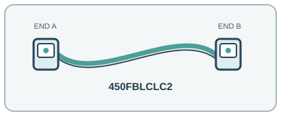

[ INDIVIDUAL COMPONENT // OPTICAL FIBER PATCH CORD ]
StarTech 450FBLCLC2 2 m OM4 LC Duplex Fiber Patch Cable
A 2 m duplex OM4 jumper for connecting multimode LC optical ports in compatible short-reach Ethernet and data-center links.

IDENTIFICATION: Exact manufacturer model/SKU: StarTech.com 450FBLCLC2. Connector fit alone does not establish electrical, optical, protocol or platform compatibility.
Product specifications
| Manufacturer model / SKU | StarTech.com 450FBLCLC2 |
|---|---|
| Product type | OPTICAL FIBER PATCH CORD |
| Connector/end types | LC/UPC duplex connector → LC/UPC duplex connector (two fibers; Tx/Rx pair). |
| Fiber grade / Ethernet category | OM4 laser-optimized multimode, 50/125 µm (850 nm VCSEL-class link fiber). |
| Length | 2 m (6.6 ft). |
| Bend radius and shielding | 2.9 mm cable diameter, LSZH jacket and aramid-fiber strength members; dielectric (non-metallic) cable, not EMI-shielded. StarTech specifies a 30 mm static and 60 mm dynamic bend radius. |
| Speed / distance limits | For a compatible duplex 10GBASE-SR optical link, OM4 supports up to 400 m at 850 nm; the 2 m patch cord does not extend the transceiver/channel budget. LC duplex is not the MPO interface required by parallel 40G/100G SR4 optics. The 400 m value is a standards-based OM4 10GBASE-SR channel limit, not an assurance of that reach from this patch cord alone. |
| Compatibility | Duplex LC/UPC multimode transceivers and patch panels with OM4-compatible 50/125 µm ports, correct polarity and 850 nm wavelength. Do not mate UPC with APC or single-mode optics. |
Compatibility and handling
Duplex LC/UPC multimode transceivers and patch panels with OM4-compatible 50/125 µm ports, correct polarity and 850 nm wavelength. Do not mate UPC with APC or single-mode optics.
Bend-radius note: Minimum bend radius: 30 mm static / 60 mm dynamic, per the StarTech product specification.
Shielding / jacket: All-dielectric optical assembly; LSZH jacket and aramid strength members, with no metallic EMI shield.
Inspect the jacket, strain relief, latch and end faces before use. For optical assemblies, keep dust caps in place and never look into a live fiber. For copper/active-end assemblies, avoid tight bends and cable crushing; validate PoE and device compatibility from the relevant port documentation.
Manufacturer sources and technical references
- StarTech.com — 450FBLCLC2 OM4 fiber-optic cableManufacturer model, LC/UPC ends, OM4 grade, 2 m length and jacket/strength-member information.
- Corning — 40/100G multimode fiber connectivityFiber-manufacturer reference for multimode link reach and interface caveats.
Manufacturer sources are HTTPS. Limits quoted here are link/application limits: the installed cable channel, transceivers, connectors, port support and installation quality determine actual service. Confirm model revision and regional documentation before deployment.